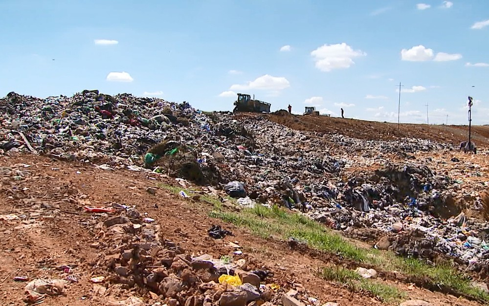
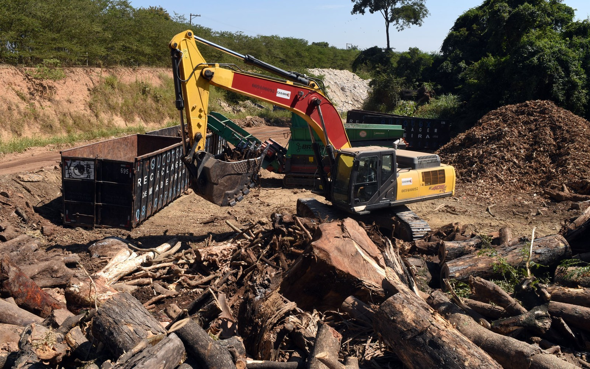
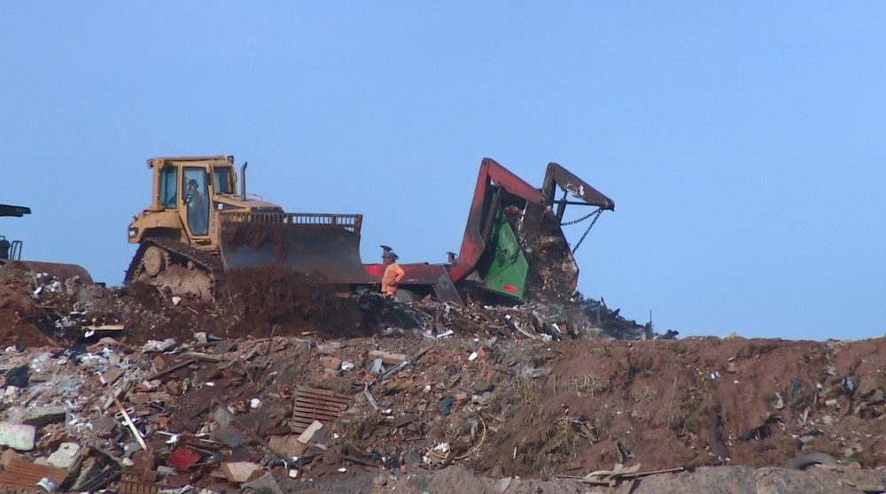
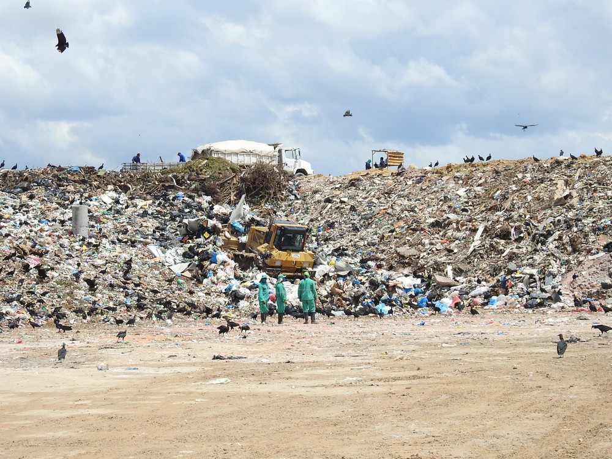
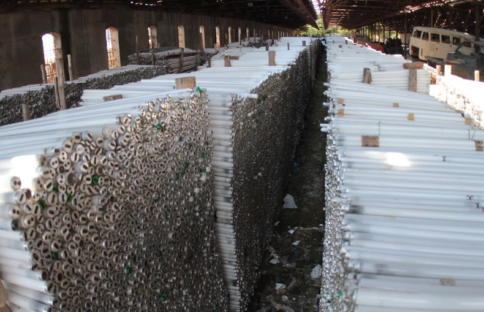

Fique ligado nas notícias relacionas ao meio ambiente
Após crise e atrasos, Prefeitura conclui projeto para tratar lixo em Campinas e agenda licitação da PPP
Solução para coleta, tratamento e aproveitamento do lixo é prometida pela Prefeitura desde 2013. Projeto inclui construção de três usinas e implementação de contêineres em 100% da cidade.
Usina de compostagem de lixo 'verde' em Campinas começa operação em maio, planeja Prefeitura
 São recolhidos, diariamente, cerca de 300 toneladas de troncos, galhos e palha de grama na cidade. Licença de operação da Cetesb está prevista para meados de abril. Usina ficará instalada na fazenda do Instituto Agronômico de Campinas (IAC).
Caçambeiros reclamam de lotação e falta de manutenção em usina de reciclagem em Campinas
 Usina recebe cerca de 600 caçambas por dia, além do entulho gerado por obras municipais, como a do BRT. Máquina para trituração, no entanto, tem problema frequentes.
Brasil é o 4º maior produtor de lixo plástico do mundo e recicla apenas 1%
 Estudo foi feito pelo Fundo Mundial para a Natureza (WWF) e divulgado nesta segunda (4). País produz 11 milhões de toneladas de lixo plástico por ano.
Sem licitação, Campinas estoca 75 toneladas de lixo eletrônico
 Prefeitura busca empresas interessadas para poder licitar tratamento adequado dos resíduos
Conheça as ONGS ambientais

Greenpeace

WWF (World Wide Fund for Nature)

Sikana

Water

IPE (Instituto de Pesquisas Ecológicas)

SOS Amazônia

ISA (Instituto Sócio ambiental)

Sea Shepherd